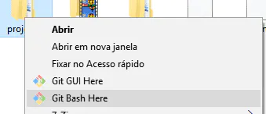
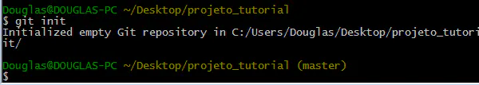

WINDOWS: Criando um repositório Git local e comitando
Crie uma pasta, botão direito nela e “Git Bash Here”.
Antes de mais nada, informe ao Git os seus dados, que irão identificar seus commits. Digite os comandos:

Dica: para copiar e colar comandos no Git Bash, clique com o botão direito na tela do terminal.
Agora vamos inicializar um repositório Git nesta pasta que estamos.
Viu esse (master) que apareceu na linha de comando? Ele indica que você está em um repositório Git, na branch master. Xique, hein?
Vamos adicionar um arquivo neste repositório que está vazio e comitá-lo. Veja a sequência de comandos:

Primeiro criamos um arquivo teste.txt vazio. Depois adicionamos todos os novos arquivos (no caso só o teste.txt) ao índice do repositório, e por último comitamos todos os arquivos que estão no índice e foram modificados.
LINUX: Novo repositório: git init
Para criar um novo repositório, você vai usar o comando git init. git init é um comando único que você usa durante a configuração inicial de um novo repositório. A execução desse comando cria um novo subdiretório .git no diretório de trabalho atual. Essa ação também vai criar uma ramificação principal.
Controlando a versão de um projeto existente com um novo repositório git
Este exemplo pressupõe que você já tem uma pasta de projeto existente dentro da qual gostaria de criar o repositório. Você primeiro fará cd à pasta raiz do projeto e depois executará o comando git init.
Apontar git init a um diretório de projeto existente executará a mesma configuração de inicialização mencionada acima, mas com escopo para este diretório de projeto.